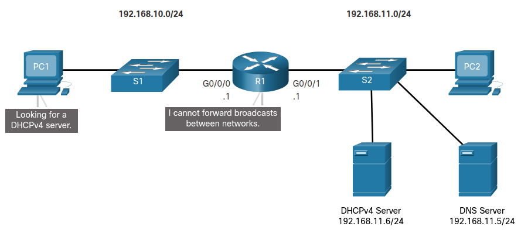

Switching, Routing, and Wireles Essentials MOC.
1 Basic Device Configurations
2 Switching Concepts
3 VLANs
4 TODO Inter-VLAN Routing
4.1 Inter-VLAN Routing Operation
4.1.1 What is inter-VLAN Routing
4.1.2 Legacy inter-VLAN Routing
4.1.3 Router-on-a-Stick inter-VLAN Routing
4.1.4 Inter-VLAN routing on a Layer 3 Switch
4.2 Router-on-a-Stick inter-VLAN Routing
4.2.1 Router-on-a-Stick scenario
4.2.2 S1 VLAN and Trunking Configuration
4.2.3 S2 VLAN and Trunking Configuration
4.2.4 R1 Subinterface Configuration
4.2.5 Verify Connectivity Between PC1 and PC2
4.2.6 Router-on-a-Stick Inter-VLAN Routing Verification
4.3 Inter-VLAN Routing using Layer 3 Switches
4.3.1 Layer 3 Switch Inter-VLAN Routing
4.3.2 Layer 3 Switch Scenario
4.3.3 Layer 3 Switch Configuration
4.3.4 Layer 3 Switch Inter-VLAN Routing Verifcation
4.3.5 Routing on a Layer 3 Switch
4.3.6 Routing Scenario on a Layer 3 Switch
4.3.7 Routing Configuration on a Layer 3 Switch
4.4 Troubleshoot Inter-VLAN Routing
4.4.1 Common Inter-VLAN Issues
4.4.2 Troubleshoot Inter-VLAN Routing Scenario
4.4.3 Missig VLANs
4.4.4 Switch Trunk Port Issues
4.4.5 Switch Access Port Issues
4.4.6 Router Configuration Issues
5 STP Concepts
6 EtherChannel
7 DHCPv4
7.1 DCHPv4 Concepts
7.1.1 DCHPv4 Server and Client
DCHPv4 o Dinamic Host Configuration Protocol v4 asigna direcciones y otros tipos de configuración de red dinámicamente.
Un router de cisco puede ser configurado para proveer servicios DHCPv4 sin la necesidad de un servidor dedicado.
El servidor DHCPv4 asigna o presta dinámicamente direcciones IPv4 de un grupo por un período de tiempo limitado definido por el servidor o hasta que el cliente ya no necesita la dirección.
A los clientes les es prestada la información del servidor comúnmente por 24h o hasta una semana, cuando el tiempo expira el cliente debe pedir otra dirección, aunque normalmente se le da la misma dirección.
Proceso:
- El proceso de arrendamiento o prestamo, incia con el ciente mandando un mensaje pidiendo los servicios de un servidor DHCP.
- Si hay un Servidor DHCPv4 disponible, este recibe el mensaje y responde con una dirección IPv4 y otra información de configuración.
7.1.2 DCHPv4 Operation
El protocolo DHCPv4 funciona en un modelo de Cliente/Servidor.
- El servidor asigna o arrenda una dirección IPv4 a un cliente.
- El cliente se conceta a la red con esa dirección hasta que esta expira.
- El cliente debe contactar al servidor DHCP periodicamente para extender su arrendamiento.
Este modelo permite que se reusen direcciones cuando no están en uso.
7.1.3 Steps to Obtain a Lease
Cuando un cliente enciende o se conecta a una red empieza un proceso para optener un arrendamiento de IPv4.
- DHCP Discover (DHCPDICOVER).
- El cliente inicia el proceso con un mensaje broadcast DHCPDICOVER con su propia dirección MAC para encontrar un servidor DHCPv4.
- Usa broadcast de capa 2 y 3 para comunicarse con el servidor.
- DHCP Offer (DHCPOFFER).
- Cuando el servidor recibe un DHCPDICOVER, reserva una dirección IPv4 disponible para arrendarla al cliente.
- Crea una entrada ARP que consiste de la dirección MAC del cliente y la dirección asignada a este.
- Manda un mensaje DHCPOFFER al cliente.
- DHCP Request (DHCPREQUEST)
- El cliente recibe el DHCPOFFER y responde con un mensaje DHCPREQUEST.
- Este mensaje es usado para el arrendamiento y para la renovación del mismo.
- DHCP Acknowledgment (DHCPACK)
- Cuando el servidor recibe el DHCPREQUEST, puede verificar la información de arrendamiento con un mensake ICMP (ping) a la dirección asignada.
- Crea una nueva entrada ARP para el arrendamiento y responde con un DHCPACK.
- El DHCPACK es un duplicado del DHCPOFFER exepto por un cambio en el tipo de mensaje.
7.1.4 Steps to Renew a Lease
Antes de que el arrendamiento termine, el cliente inicia un proceso de dos pasos para renovar el arrendamiento.
- DHCP Request (DHCPREQUEST). Antes de que expire, el cliente manda un DHCPREQUEST directamente al servidor DHCPv4 que le ofreció su dirección IPv4, Si no es recibida una respuesta DHCPACK, el cliente manda otro DHCPREQUEST.
- DHCP Acknowledgment (DHCPACK). EL servidor verifica la información de arrendamiento y retorna un DHCPACK.
7.2 Configure a Cisco IOS DHCPv4 Server
7.2.1 Steps to Configure a Cisco IOS DHCPv4 Server
Se necesitan los siguientes pasos para Configurar un Servidor DHCPv4.
- Exclude IPv4 Addresses
Excluimos algunas direcciones que no queremos que sean asignadas.
Router(config)# ip dhcp excluded-address low-address [high-address]
- Define a DHCPv4 Pool Name
Asignamos un nombre a el conjunto de direcciones que vamos a arrendar.
Router(config)# ip dhcp pool pool-name Router(dhcp-config)#
- Configure the DHCPv4 Pool
El conjunto de direcciones (address pool) y la puerta de enlace predeterminada del ruter debe ser configurada,
Otros Comandos pueden ser opcionales.
Task IOS Command Define the address pool network network-number [mask/prefix-length]Define the default router or gateway default-router address [ address2….address8]Define a DNS server dns-server address [ address2…address8]Define the duration of the DHCP lease lease {days [hours [minutes]]} infinite (simbolo or) infiniteDefine the domain name domain-name domainDefine the NetBIOS WINS server netbios-name-server address [ address2…address8]
7.2.2 Configuration Example
Este ejemplo muestra la configuración para hacer a R1 un servidor DHCPv4 para 192.168.10.0/24 LAN.
R1(config)# ip dhcp excluded-address 192.168.10.1 192.168.10.9 R1(config)# ip dhcp excluded-address 192.168.10.254 R1(config)# ip dhcp pool LAN-POOL-1 R1(dhcp-config)# network 192.168.10.0 255.255.255.0 R1(dhcp-config)# default-router 192.168.10.1 R1(dhcp-config)# dns-server 192.168.11.5 R1(dhcp-config)# domain-name example.com R1(dhcp-config)# end R1#
7.2.3 DHCPv4 Verification Commands
-
show running config | section dhcp - Muestra los comandos de DHCPv4 configurados en el router.
-
show ip dhcp binding - Muestra una lista de todas las direcciones MAC dadas por DHCPv4.
-
show ip dhcp server statistics - Muestra información sobre el numero de mensajes DHCPv4 que se han sido enviados o recibidos.
7.2.4 Verify DHCPv4 is Operational
Según una topología, R1 ha sido configurado para proveer servicios de DHCPv4, PC1 aun no ha sido enciendido, asi que no tiene dirección IP.
- Verify the DHCPv4 Configuration
como se muestra en el ejemplo, el comando
show running-config | section dhcpmuestra la configuración de R1, el parametro| section dhcpmuestra solo la información relacionada con DHCPv4.R1# show running-config | section dhcp ip dhcp excluded-address 192.168.10.1 192.168.10.9 ip dhcp excluded-address 192.168.10.254 ip dhcp pool LAN-POOL-1 network 192.168.10.0 255.255.255.0 default-router 192.168.10.1 dns-server 192.168.11.5 domain-name example.com
- Verify DHCPv4 Bindings
La operación de DHCPv4 puede ser verificada usando el comando
show ip dhcp binding, este muestra una lista de las relaciones IPv4 a MAC que fueron dadas por el servidor DHCPv4.R1# show ip dhcp binding Bindings from all pools not associated with VRF: IP address Client-ID/ Lease expiration Type State Interface Hardware address/ User name 192.168.10.10 0100.5056.b3ed.d8 Sep 15 2019 8:42 AM Automatic Active GigabitEthernet0/0/0 - Verify DHCPv4 Statics
Este comando muestr la el número de mensajes DHCPv4 que han sido mandados y recibidos.
R1# show ip dhcp server statistics Memory usage 19465 Address pools 1 Database agents 0 Automatic bindings 2 Manual bindings 0 Expired bindings 0 Malformed messages 0 Secure arp entries 0 Renew messages 0 Workspace timeouts 0 Static routes 0 Relay bindings 0 Relay bindings active 0 Relay bindings terminated 0 Relay bindings selecting 0 Message Received BOOTREQUEST 0 DHCPDISCOVER 4 DHCPREQUEST 2 DHCPDECLINE 0 DHCPRELEASE 0 DHCPINFORM 0
- Verify DHCPv4 Client Recieved IPv4 Adddressing
Con el comando
ipconfig /allpodemos ver si el cliente recibió la información del servidor DHCPv4.C:\Users\Student> ipconfig /all Windows IP Configuration Host Name . . . . . . . . . . . . : ciscolab Primary Dns Suffix . . . . . . . : Node Type . . . . . . . . . . . . : Hybrid IP Routing Enabled. . . . . . . . : No WINS Proxy Enabled. . . . . . . . : No Ethernet adapter Ethernet0: Connection-specific DNS Suffix . : example.com <----- Description . . . . . . . . . . . : Realtek PCIe GBE Family Controller Physical Address. . . . . . . . . : 00-05-9A-3C-7A-00 DHCP Enabled. . . . . . . . . . . : Yes Autoconfiguration Enabled . . . . : Yes IPv4 Address. . . . . . . . . . . : 192.168.10.10 <----- Subnet Mask . . . . . . . . . . . : 255.255.255.0 Lease Obtained . . . . . . . . . : Saturday, September 14, 2019 8:42:22AM Lease Expires . . . . . . . . . : Sunday, September 15, 2019 8:42:22AM Default Gateway . . . . . . . . . : 192.168.10.1 <----- DHCP Server . . . . . . . .. . . : 192.168.10.1 DNS Servers . . . . . . . .. . . : 192.168.11.5 <-----
7.2.5 Disable the Cisco IOS DHCPv4 Server
El servicio DHCPv4 esta activado por defecto,
para desactivarlo usamos el comando no service dhcp.
R1(config)# no service dhcp R1(config)# service dhcp R1(config)#
7.2.6 DHCPv4 Relay
En redes más complejas, los servidores de una empresa estan localizados de forma centralizada, Estos proveen DHCP, DNS, TFTP y FTP por toda la red. Y es problable que los cientes no esten en la misma Subred que esos servidores. Para locarizar esos servidores se ocupan mensajes broadcast.

En la figura, PC1 intenta adquirir una dirección IPv4 de un servidor DHCPv4 usando un broadcast. R1 no esta configurado como servidor DHCPv4 y no enruta los paquetes.
- ipconfig /release
Siendo PC1 una maquina con windows, verificamos la información de direccionamiento con el comando:
C:\Users\Student> ipconfig /release Windows IP Configuration Ethernet adapter Ethernet0: Connection-specific DNS Suffix . : Default Gateway . . . . . . . . . :
- ipconfig /renew
Seguido, el administrador de red intenta renovar la dirección IPv4 con el comando
ipconfig /renew. Este comando manda un mensaje DHCPDICOVER.C:\Users\Student> ipconfig /renew Windows IP Configuration An error occurred while renewing interface Ethernet0 : unable to connect to your DHCP server. Request has timed out.
- ip helper-address
Una mejor solución para configurar R1 es con el comando
ip helper-addres. Este hace que R1, releve los mensajes DHCPv4 al servidor DHCPv4.R1(config)# interface g0/0/0 R1(config-if)# ip helper-address 192.168.11.6 <--- dirección del servidor DHCP R1(config-if)# end R1#
- show ip interface
Cuando R1 ha sido configurado como relay agent DHCPv4, acepta los broadcast del servicio DHCPv4 y los manda al servidor DHCPv4. El administrador puede usar el siguiente comando para verificar esta información.
R1# show ip interface g0/0/0 GigabitEthernet0/0/0 is up, line protocol is up Internet address is 192.168.10.1/24 Broadcast address is 255.255.255.255 Address determined by setup command MTU is 1500 bytes Helper address is 192.168.11.6 (output omitted)
- ipcongig /all
Como se muestra en esta salida PC1 fue capaz de adquir información de direccionamiento.
C:\Users\Student> ipconfig /all Windows IP Configuration Ethernet adapter Ethernet0: Connection-specific DNS Suffix . : example.com IPv4 Address. . . . . . . . . . . : 192.168.10.10 Subnet Mask . . . . . . . . . . . : 255.255.255.0 Default Gateway . . . . . . . . . : 192.168.10.1
7.3 Configure a Cisco IOS DHCPv4 Client
7.3.1 Cisco Router as a DHCPv4 Client
8 SLAAC and DHCPv6
9 FHRP Concepts
10 LAN Security Concepts
11 Switch Security Configuration
11.1 Implement Port Security
11.1.1 Secure Unused Ports
Los dispositivos de capa 2 son los dispositivos más vulnerables en una infraestructura. Todas las interfaces (puertos) deben de estar asegurados antes de que el switch sea usado.
La manera más fácil de asegurar puertos es desactivar los que no estan en uso.
Switch(config)# interface range type module/first-number – last-number
Por ejemplo para apagar todos los puertos para Fa0/8 a través de Fa0/24 en S1.
S1(config)# interface range fa0/8 - 24 S1(config-if-range)# shutdown %LINK-5-CHANGED: Interface FastEthernet0/8, changed state to administratively down (output omitted) %LINK-5-CHANGED: Interface FastEthernet0/24, changed state to administratively down S1(config-if-range)#
11.1.2 Mitigate MAC Address Table Attacks
El método más efectivo para prevenir overflow de la tabla de direcciones MAC es habilitar seguridad de puertos.
Esta medida permite al switch aprender dinámicamente un número límitado de direcciones MAC, permitiendo mitigar el acceso no autorizado al switch.